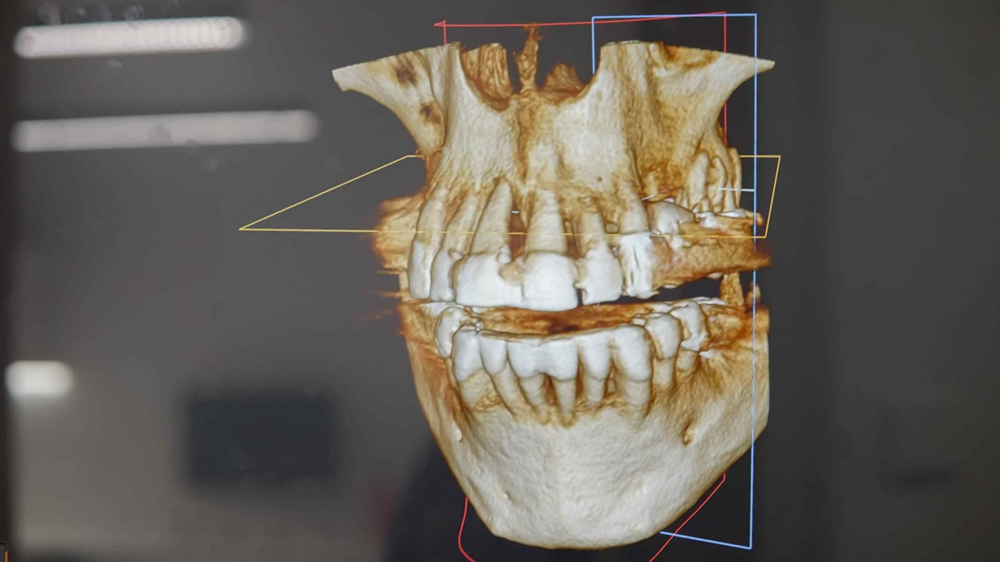
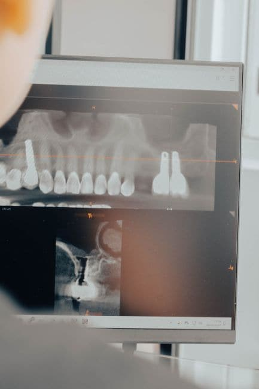

Especialidad
Implantología
«Implantes dentales: una solución estable y duradera para reponer piezas dentales perdidas»

¿Puedo ponerme un implante?
Sólo tu dentista puede decirte si en tu caso es aconsejable un tratamiento con implantes dentales. Para ello es necesario estudiar la salud oral y sistémica de cada paciente. Un diagnóstico y un tratamiento individualizados son la base del éxito del implante dental.
¿Qué es un implante dental?
El implante dental propiamente dicho es una estructura cónica o cilíndrica similar a un tornillo. Una vez insertado en el hueso (maxilar o mandibular) sustituye a la raíz del diente. Funcionará igual que nuestros propios dientes permitiendo masticar, hablar o sonreír con absoluta normalidad. Están fabricados generalmente de titanio, un material altamente compatible llevando un tratamiento especial en su superficie. Este tratamiento es lo que diferencia enormemente a unas marcas de otras y hace que se fusionen implante y hueso con mayor seguridad reduciendo así los riesgos de rechazo. A esta fusión entre hueso e implante la llamamos osteointegración. Por ello y para asegurarnos una correcta osteointegración y el éxito del tratamiento, trabajamos con una de las marcas líderes del mercado. La fase protésica para colocar el diente (o muela) sobre el implante comienza después de 2-6 meses de osteointegración. En determinados casos por motivos estéticos le podemos diseñar la prótesis al paciente en el mismo momento y salir de la consulta luciendo una nueva sonrisa. A esto lo llamamos carga inmediata.
Precio de implantes dentales
Es por todo esto (explicado de una forma sencilla) que a la hora de comparar precios es muy importante saber si nos están hablando de un implante dental (tornillo que sustituye a la raíz), de la marca de ese implante y de si nos hablan del implante o de implante y prótesis. Un truco muy habitual es ofertar precios de implantes llamativos (normalmente de baja calidad) en los que no se incluye la prótesis ni los elementos necesarios para diseñar dicha prótesis.
¿Cómo se coloca un implante dental?
Antes de decidir como colocar un implante dental es necesario realizar un meticuloso estudio individualizado. Utilizamos diferentes técnicas de imagen como radiografías intraorales, radiografías panorámicas, TAC, escáneres digitales, etc. para saber de antemano como es tu hueso, tu encía y toda la anatomía que rodea a la zona edéntula. En el 90% de los casos vamos a intentar ofrecerte una técnica mínimamente invasiva, bajo anestesia local (misma anestesia que usaríamos para un empaste). Es una técnica permite hacer vida normal incluso masticar o cepillarte los dientes a las pocas horas del tratamiento. Incluso en muchos tratamientos el paciente puede salir directamente de la clínica con su prótesis terminada por motivos estéticos.
Tipos de prótesis sobre implante
- Implante unitario: cuando tenemos la pérdida de una sola pieza, con un solo implante seremos capaces de rehabilitar la pieza que falta. Devolvemos funcionalidad y estética y prevenimos cambios morfológicos alrededor de la zona edéntula con un proceso simple y rápido.
- Puente sobre implantes: cuando nos faltan varias piezas en un mismo cuadrante, no siempre es necesario colocar un implante por cada pieza que falta. Dependiendo de lo largo que sea ese tramo y de la cantidad y calidad del hueso podremos poner implantes intercalados o separados sobre los que sujetaremos el total de las piezas que faltan.
- Próteis híbridas: cuando no tenemos ninguna pieza dental podemos rehabilitar toda la arcada dental mediante una prótesis fija atornillada que le devuelva al paciente la seguridad, confort y estética. El número de implantes a colocar depende mucho del caso y del hueso remanente. Estas prótesis tienen un esqueleto rigido de diferentes materiales (aleaciones de metales, titanio, zirconio) y después están revestidas de resina rosa que simula perfectamente la encía del paciente sobre la cual después se montan los dientes. Son estructuras fijas, no desmontables por el paciente, atornilladas y altamente estéticas.
- Sobredentaduras o prótesis removibles implantomucosoportadas: Esta solución se utiliza también cuando no tenemos ninguna pieza dental. Es la alternativa a una prótesis híbrida cuando no se puede realizar por motivos de anatomía, económicos o de higiene. Son necesarios tan solo 2 o 4 implantes por arcada con lo cual la usamos cuando no tenemos suficiente hueso o cuando buscamos alternativas más económicas. También facilita mucho la higiene por parte del paciente. El aspecto puede parecer similar al de una prótesis removible convencional pero no tienen absolutamente nada que ver. La sujeción que nos aportan los implantes mediante los diferentes sistemas de anclaje (barra ackerman, sistema locator…) es un 300% mayor que cualquier prótesis convencional. Te enseñaremos como montarla y desmontarla pues la sujeción es tanta que requiere ciertas indicaciones al principio. Son muy cómodas, más económicas y muy higiénicas.
Ventajas de un implante
Los implantes dentales ofrecen muchas ventajas. Se trata de dar una solución duradera para las piezas dentales que hemos perdido, preferible a otras alternativas como las dentaduras convencionales o los puentes fijos que se cementan sobre dientes sanos.
Ventajas:
- Es una solución más estable y duradera.
- Son más rentables a largo plazo (a partir de unos 7 años) que otras alternativas.
- La prótesis se siente más segura, cómoda y natural.
- La estética y la función se parece mucho a un diente natural.
- No es necesario alterar dientes sanos para colocarlos.
- Alta tasa de éxito con implantes de calidad y una planificación adecuada.
- Previenen la pérdida de hueso y que cambie nuestra masticación.
Con técnicas adecuadas e implantes de calidad, los fracasos son poco frecuentes, aunque ningún tratamiento está libre de riesgos. Estos se asocian a pacientes muy fumadores, pacientes periodontales o pacientes con problemas de salud como diabetes o inmunodeprimidos.
Factores que influyen en el precio de un implante
- La marca del implante: existen multitud de sistemas y marcas de implantes fabricados en países diferentes. Los precios son igual de diferentes puesto que se diferencian en diseño, materiales, tratamiento de la superficie, respaldo científico, estudios… no todas las empresas invierten lo mismo en cada una de estas cosas. Un implante de alta gama siempre será más caro que el de otro fabricante. Estos no cuentan con los mismos recursos, ni medios materiales, ni la tecnología necesaria para desarrollar una solución duradera, de calidad y avalada por estudios científicos de largo plazo. Los implantes “baratos” o de imitación no pueden considerarse como una alternativa comparable a los de un implante de alta gama. Carecen de respaldo científico y tienen mayor riesgo de fracaso. Los tratamientos de superficie y los materiales de los implantes “baratos” son peores y pueden originar complicaciones a medio-largo plazo como rotura del implante, rotura de la conexión del implante, rotura del tornillo y/o mayor riesgo de periimplantitits.
- El pilar y los aditamentos: son la multitud de elementos necesarios que interconectarán implante con prótesis. Cada fabricante tiene los suyos originales pero existen otros considerados “compatibles”. El precio de un original siempre será mayor que el del “compatible” pero la probabilidad de éxito a largo plazo será mayor. Al igual que ocurre con los implantes, el precio de los componentes de una casa de gama alta será mucho mayor que el de un fabricante barato de calidad muy inferior.
- La prótesis y el trabajo del laboratorio: aunque el trabajo dentro de la clínica dental sea impecable, la calidad final puede verse alterada sino se cuenta con un laboratorio que esté a la altura de las calidades de la clínica. Existen cientos de laboratorios y no todos están al mismo nivel de experiencia, cualificación o medios técnicos disponibles. Un buen laboratorio suele tener unas tarifas acordes a la calidad que ofrece y esto incrementa el coste final del tratamiento.
- Necesidad o no de prótesis provisionales: es un aspecto importante y que no siempre se tiene en cuenta sobre todo a la hora de lanzar ofertas “gancho” por parte de las “empresas dentales”. En la mayoría de los casos y como hemos explicado anteriormente, después de colocar el implante hay que esperar al proceso de osteointegración y esto supone entre 2-6 meses. Para que el paciente no esté sin dientes durante ese tiempo a veces son necesarias unas prótesis provisionales diseñadas a medida que nos ayudarán sobre todo a solucionar problemas estéticos. Pensamos en tí desde el primer momento.
- Experiencia y formación del cirujano/a: debería resultar obvio que para obtener un buen resultado en el trabajo es necesaria una formación de postgrado de un centro de prestigio y cierta experiencia.
- Complicación del caso: la complejidad de cada caso es diferente. Esto depende de la salud del paciente, su edad, número de dientes a reemplazar y así pues de la necesidad de emplear procedimientos adicionales que encarecerían el presupuesto. Los más frecuentes son la regeneración ósea guiada, injertos de hueso, elevación de seno maxilar…
- Técnicas de diagnóstico por imagen: no todos los implantes se colocan de igual modo. Colocar un implante de la manera correcta es un proceso delicado en el que es necesario un alto nivel de detalle y precisión. Tu dentista debe estar seguro de cuál debe ser la posición exacta del implante y para ello empleamos diferentes técnicas de diagnóstico por imagen que podrían encarecer el precio del implante. Las más comunes dependiendo de los casos son radiografías periapicales o intraorales, ortopantomografías, tomografía axial computerizada (TAC), escáner intraoral digital, o diseño de férulas quirúrgicas que dan la posición exacta del implante teniendo ya en cuenta la corona (la prótesis). Ponte en manos de la tecnología…
- Mantenimiento y revisiones regulares: el tratamiento con implantes es una solución pensada para muchos años pero al igual que nuestros propios dientes requieren una serie de cuidados y muy buena higiene para mantenerse en perfecto estado.
- Nosotros te recomendamos revisiones cada 6 meses si eres portador de implantes para revisar todos los aspectos relacionados con ellos.
Los ajustes más comunes serán:
- asegurar una correcta higiene
- apretar prótesis que se hayan podido aflojar
- prevenir infecciones
- mantener estado perfecto de la encía alrededor del implante
- mantener los puntos de contacto con los dientes adyacente
Son sencillas visitas que a veces tienen un pequeño coste que también se debería tener en cuenta.
A la hora de comparar presupuestos debemos asegurarnos de estar comparando “manzanas con manzanas”. Si recibes un presupuesto de implantes demasiado bueno para ser cierto es porque muy probablemente así sea. Lo más normal es que un precio muy bajo se deba a uno o varios de estos factores negativos.
Factores negativos:
- Sistema de implantes barato, clónico o de imitación.
- Baja calidad de materiales o instrumental empleado en la clínica.
- Plan de tratamiento alternativo de menor coste pero no ideal para el paciente.
- Técnicas de trabajo más rápidas o no adecuadas.
- Laboratorio protésico de baja calidad.
- Profesionales con poca experiencia o baja cualificación.
- Bajos estándares de limpieza y esterilización.
- Medios obsoletos.
- Fraudes o estafas: intrusismo profesional, clínicas sin licencia, sobretratamientos…
- Publicidad engañosa: precios “gancho” que en realidad no incluyen todos los conceptos necesarios para el tratamiento.
Recuerda que en nuestra clínica NO VENDEMOS NADA, sino que emitimos diagnósticos.
Estamos aquí para ayudarte y solucionar problemas de SALUD. Contáctanos.
“Sólo un necio confunde valor y precio” (Antonio Machado).
